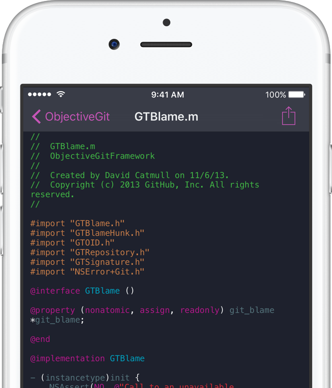
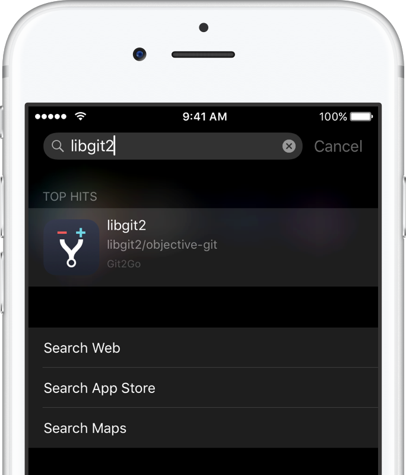

Git2Go
The Git client for iPhone and iPad you always wanted
Git2Go is the first app for iOS which unleashes your full development productivity from everywhere. Clone all your GitHub and Bitbucket repositories with just one tap, manage branches and easily commit changes after you’ve edited code on-the-fly - All from your iPhone and iPad!


Seamless Git Integration for GitHub, GitHub Enterprise, Bitbucket & GitLab
Take all your Git accounts with you by connecting them in Git2Go. Logging in is super smooth and you’re immediately able to access all your repositories.
GitHub, GitHub Enterprise, Bitbucket, GitLab and self-hosted GitLab EE + CE are fully supported!
While everybody can directly start cloning their public repositories, private ones require the one time ‘Git2Go Private’ In App-Purchase (which will make our indie hearts jump). If you want to go full enterprise as well, we have a bundled ‘Git2Go Unlimited’ IAP ready to go for you.

A Git compatible Code Editor at your fingertips
Seeing your repos is nice, but the real magic starts when you can start to take immediate actions from your iOS device.
Git2Go enables you to switch into edit mode for all your files with only performing one tap.
Start adding lines of code during your commute and push them immediately into the branch of your choice, rocking an impressive syntax highlighting engine supporting for JavaScript, Java, Ruby, PHP, Python, CSS, C#‚ C, Objective-C, Swift and HTML.
Contributing to your repositories has never been easier without the bloat and complexity of desktop applications.

Work with all the files you need
Sometimes, the files you need right now the most are stored somewhere else. That’s why Git2Go perfectly integrates with available Document Providers. You’re thereby also able to edit any file you like in your favorite editor like Texttastic or Byword and even import your most recent photo or file for committing it to your favorite repository.

Commit History and Staging Support
Tracking progress within a repository can be hard, but the simplified history view within Git2Go makes it incredibly easy. Stay up to date and jump right in if you need to.

Instantly Clone Repos from Safari
Did you ever saw that fancy hip GitHub repo being posted on Twitter, wondering what it contains and how it is structured?
Well, with our brand new Safari extension, you can immediately clone it to Git2Go and view it natively on your iOS device.
Thought Universal right from the start
We share Apple’s vision of iOS devices being the future of computing. That’s why Git2Go is a fully compatible Universal App right out of the gate and is meant to work perfectly on all iOS screen sizes.
This way, you’ll easily be able to procastinate some of the more heavy mobile Git lifting to the slightly larger screen and keyboard.
So you can finally order the shiny new iPad Pro and experience a completely new Git productivity on iOS.

Benefitting from the latest iOS 9 and iPhone 6S features
Git2Go is built to take advantage of Apple’s latest innovations. That’s why it fully supports brand new iOS 9 features like Spotlight search for cloned repositories or Slide Over and Split View. If you’re also rocking a shiny new iPhone 6S or 6S Plus, you can easily preview files from your repositories using 3D Touch aka Peek and Pop.
The Makers

Piet Brauer is an iOS developer from Hamburg, Germany. While working at XING he discovered his passion for automation, streamlining processes and Open Source. When not developing Git2Go he likes taking walks and having beers in the sun.

Tim Herbig is a Product Manager from Hamburg, Germany. He’s currently with XING as a Product Owner for the Premium Membership on Mobile. When not working on side projects or blogging, he’s also pretty much into burgers, coffee, podcasts and triathlon.
What others say

”If you’ve ever wanted to push code from your phone, go buy @Git2Go right now.”
Samuel Giddins, CocoaPods Core Member
”Super impressed by Git2Go - better #git client on my phone than most desktop clients.”
Travis Mcarthur, iOS Dev on @AmazonKindle
”Touchdown in California. Used @Git2Go to write code on my phone the whole time. We live in the future, and it’s amazing.”
Brian Gesiak, Creator of Quick the Swift testing framework

”First impressions: Holy fuck Doing stuff it’s just so easy and I didn’t require any instructions or anything Everything worked just as I expected ”
Renzo Crisóstomo, iOS Developer at XING
Stay in touch

Become part of our growing mailing list in order to participate in upcoming betas and to hear first about our latest anouncements around Git2Go (no spam, we promise)!